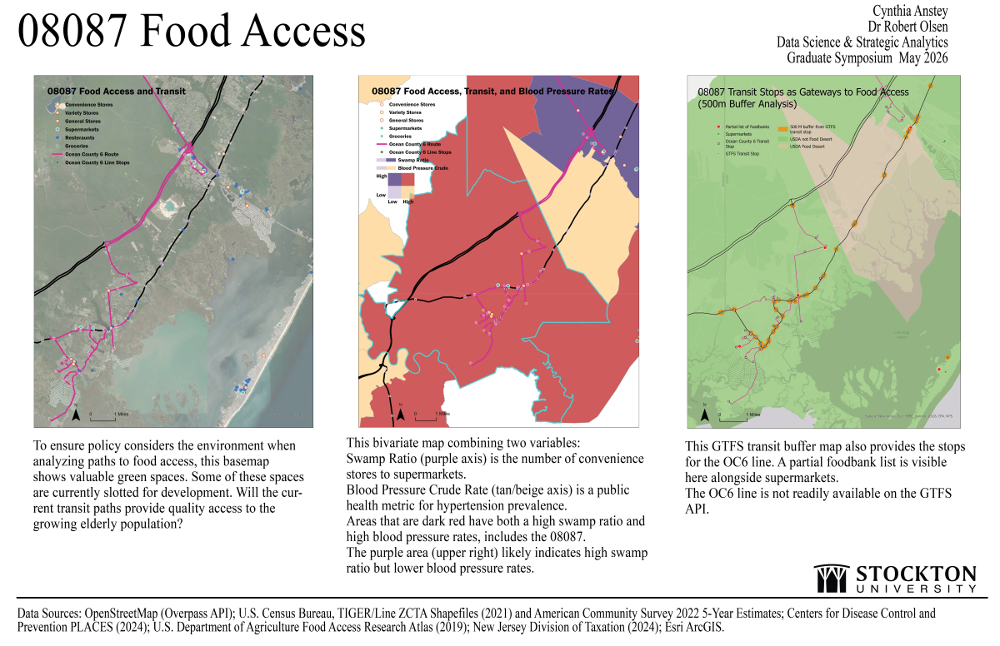

Document Intelligence Systems
OCR pipelines and PDF extraction systems for archival transcription and breach-report data mining.
2 projects →
Machine Learning Systems
Predictive modeling pipeline assessing food access vulnerability across New Jersey ZIP codes.
1 project →
Spatial & GIS Systems
Historical business-network reconstruction and archival geocoding using QGIS.
1 project →
Transit Food Access Analysis
GTFS pipeline and automated policy brief generator auditing bus-stop proximity to grocery stores in NJ.
Stockton 2026 →
Interactive Dashboards
R Shiny and Python Dash dashboards for financial metrics, migration flows, and NJ demographics.
3 dashboards →